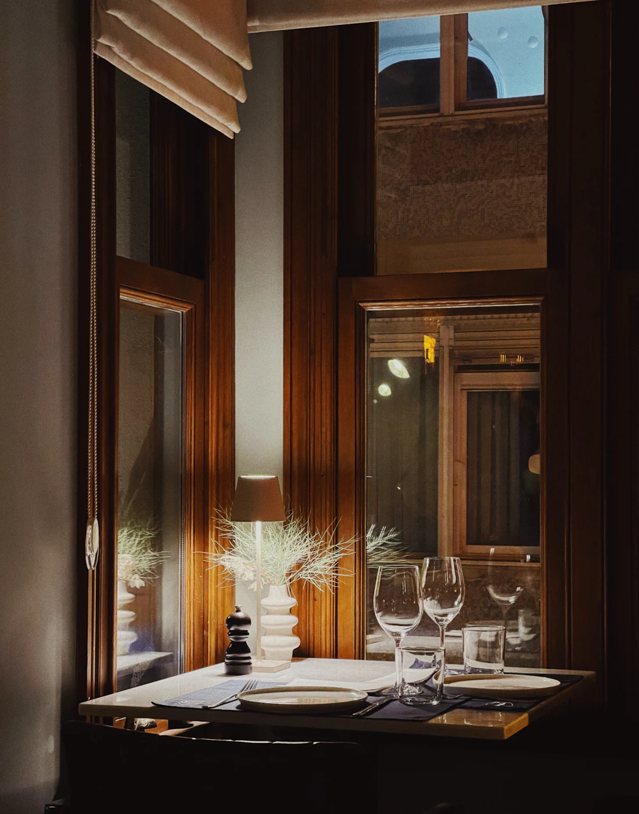
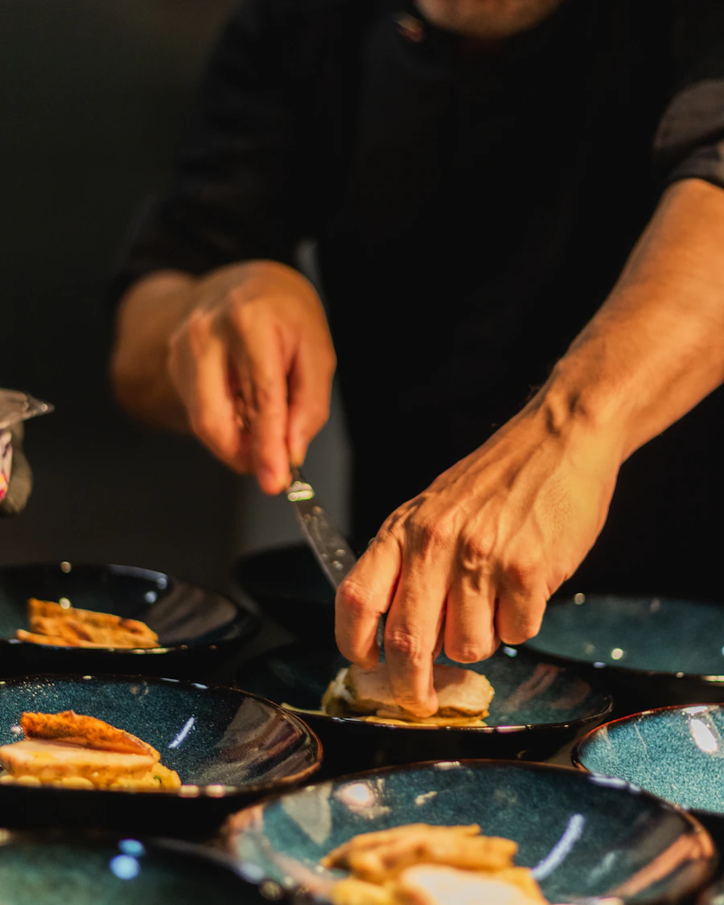
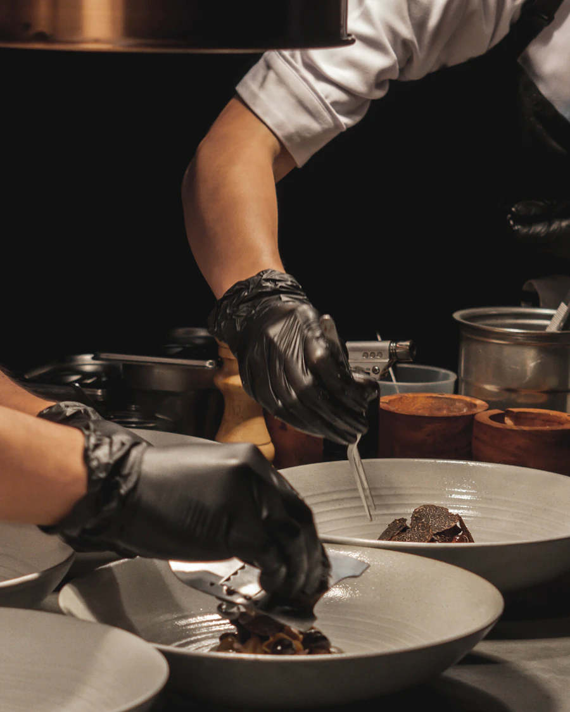
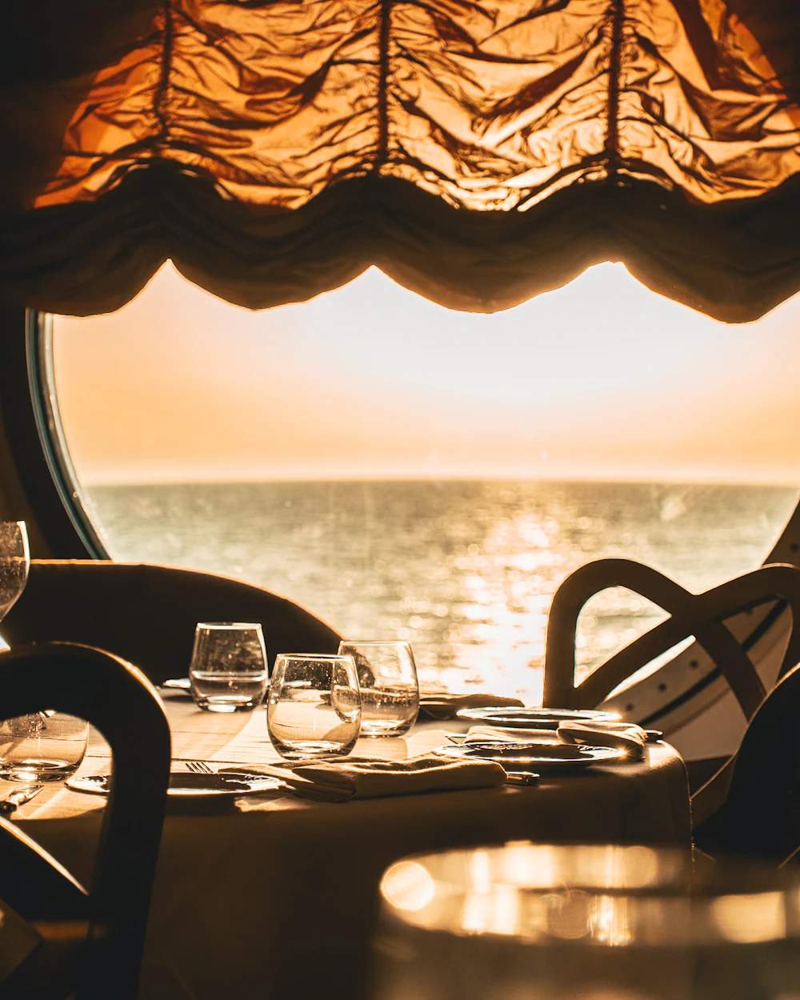
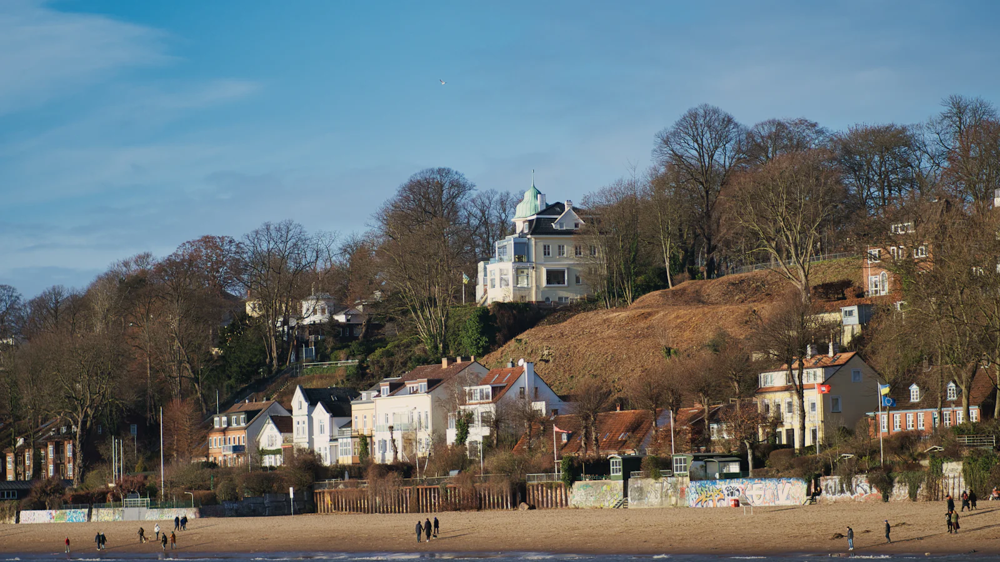

Övelgönne · direkt am Elbstrand
Küche
an der Elbe.
Fisch vom Kutter, Fleisch vom Weiderind, Gemüse aus den Vierlanden. Dazu der Blick auf die großen Pötte, die vor dem Fenster vorbeiziehen.
- Heute geöffnet 12–23 Uhr
- Küche bis 22 Uhr
- Terrasse bei Sonne

Küche & Team
Mit Liebe gekocht, mit Ruhe serviert.
Hinter jedem Teller steht ein kleines Team, das sein Handwerk liebt und Gäste gern verwöhnt.




Lage
Sand unter den Füßen, Schiffe vor dem Fenster.
- Adresse
- Övelgönne, 22605 Hamburg
- Anfahrt
- HADAG-Fähre 62 bis Neumühlen/Övelgönne, dann fünf Minuten am Strand entlang
- Geöffnet
- Di–So 12–23 Uhr, Küche bis 22 Uhr
Montag Ruhetag - Telefon
- 040 000 000 00